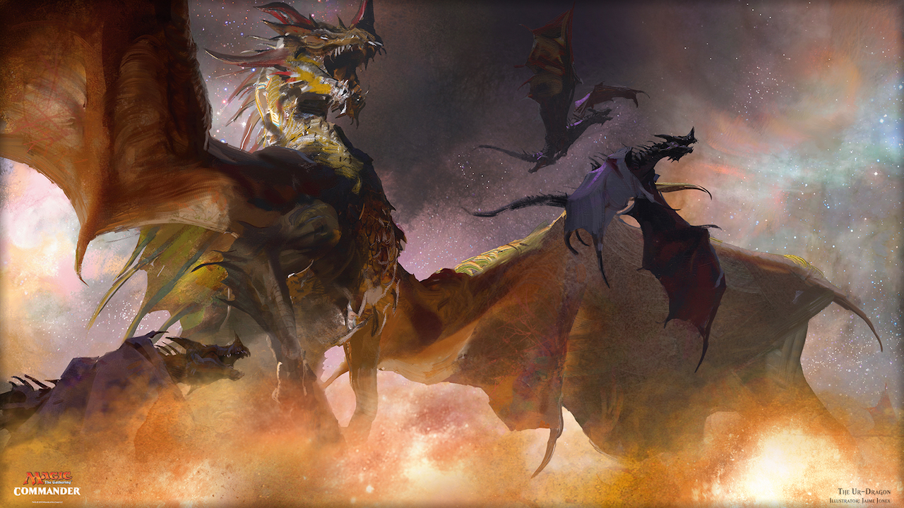
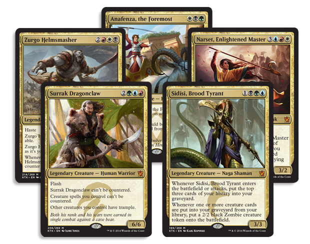
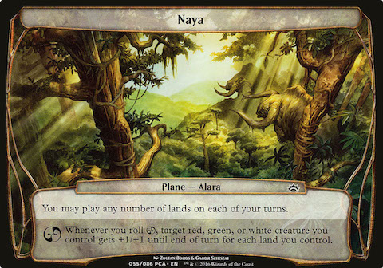
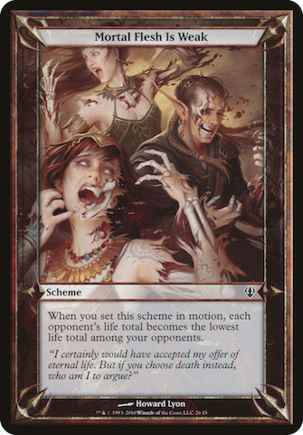

8 kwietnia 2018
W poprzednim odcinku opisałem kilka sposobów na zabawę kartami przez kilku graczy, skupiając się przede wszystkim na formatach rozgrywki wymyślonej przez fanów. Dziś porozmawiamy o wariantach casualowego medżika oficjalnie wspieranych przez producenta. Może nie poprzez organizację sankcjonowanych turniejów (mówimy przecież o graniu "for fun"), ale dzięki wydawaniu odpowiednio zmodyfikowanych zestawów kart, gotowych do takiej rozgrywki.

Pierwszym formatem, który niejako łączy dwa moje artykuły jest Commander (zwany wcześniej EDH - Elder Dragon Highlander). Wywodzi się on z Highlandera, wariantu MtG, w którym dozwolona talia może posiadać nie więcej niż jedną kopię danej karty (w odróżnieniu do standardowych czterech), oczywiście za wyjątkiem lądów podstawowych. Do tego dodano jeszcze kilka zasad: liczba kart musi wynosić dokładnie 100, wśród których musi być legendarny stwór pełniący funkcję naszego generała. Jego kolory magii określają kolory innych kart jakich możemy używać.

Jeśli chodzi o zasady rozgrywki, to najważniejszą zmianą jest podwojona ilość punktów życia, z jaką zaczynamy grę, a także funkcja samego generała. Jest on jakby oddzielnym bytem podczas gry. Na początku znajduje się "na boku", w tzw. "command zone" - nie dobieramy go do ręki i nie wtasowujemy do biblioteki. Możemy natomiast go zagrać na pole bitwy po uzbieraniu odpowiedniej ilości many. Jeżeli przeciwnik zdoła usunąć go z pola bitwy (zniszczyć, zabić, wygnać poza grę, cofnąć na rękę lub wtasować do biblioteki), zamiast tego możemy wrócić naszego generała z powrotem do "command zone". Ponowne zagranie go stamtąd za każdym razem kosztuje o 2 bezkolorowej many więcej niż poprzednio.
Elder Dragon Highlander, początkowo wymyślony przez samych graczy, spopularyzowany przez sędziów podczas rozgrywek "for fun" pomiędzy turniejami stał się na tyle popularny, że zainteresowali się nim sami Wizardsi. Zmieniono nazwę na Commander, ustandaryzowano zasady gry i obecnie co roku wydawane są gotowe zestawy zawierające talie zbudowane wokół danej legendarnej postaci.
Kolejnym, a tak naprawdę pierwszym (bo wydanym najwcześniej - w 2009 roku), z omawianych wariantów rozgrywki jest Planechase (czasami nazywany też Planar Magic). Polega on na rozszerzeniu tradycyjnego Magica o talię planów oraz sześciościenną kostkę. Plany reprezentują miejsca akcji fabuły towarzyszącej grze i wprowadzają dodatkowe efekty do gry, na przykład: "wszystkie stwory otrzymują +2/+2", albo "kiedykolwiek zagrywasz czar, dobierz kartę".

Grę rozpoczynamy z jednym aktywnym planem - wykłada go ze swojej talii pierwszy gracz. Każdy z uczestników może go zmienić, a służy do tego wspomniana wyżej kostka. Z sześciu jej ścian, cztery są puste, na jednej jest symbol planeswalkera ( ) a na drugiej symbol chaosu (). Rzucić kością możemy dowolną ilość razy podczas swojej tury, ale tylko pierwszy jest darmowy. Każdy kolejny jest o jedną bezkolorową manę droższy od poprzedniego.
) a na drugiej symbol chaosu (). Rzucić kością możemy dowolną ilość razy podczas swojej tury, ale tylko pierwszy jest darmowy. Każdy kolejny jest o jedną bezkolorową manę droższy od poprzedniego.
Po wyrzuceniu symbolu planeswalkera ( ), bieżący plan wraca na spód talii planów jego właściciela, zaś gracz rzucający kością odsłania jeden ze swoich. Po wyrzuceniu symbolu chaosu () uruchamiana jest dodatkowa zdolność, widoczna na każdej karcie planów, na przykład: "otrzymujesz liczbę punktów życia równą ilości kart na ręce", bądź też: "odsłoń kartę z wierzchu biblioteki; możesz zagrać ją bez płacenia kosztu".
), bieżący plan wraca na spód talii planów jego właściciela, zaś gracz rzucający kością odsłania jeden ze swoich. Po wyrzuceniu symbolu chaosu () uruchamiana jest dodatkowa zdolność, widoczna na każdej karcie planów, na przykład: "otrzymujesz liczbę punktów życia równą ilości kart na ręce", bądź też: "odsłoń kartę z wierzchu biblioteki; możesz zagrać ją bez płacenia kosztu".
Ostatnim formatem, o którym chciałem dziś napisać jest Archenemy. Został on od początku zaprojektowany pod multiplayer - idealnie dla czterech graczy, z których jeden jest tytułowym "arcywrogiem" i ma do dyspozycji dodatkową talię schematów. Trzech pozostałych uczestników gra natomiast wspólnie przeciwko niemu. W przypadku innej liczby graczy, zalecane jest by każdy z nich posiadał swoją talię schematów i żeby gra toczyła się w systemie każdy na każdego. W innym przypadku tracimy balans rozgrywki i albo "arcywróg" zbyt szybko wygrywa, albo też nie ma szans z większą ilością oponentów.

Talia schematów (podobnie jak talia planów w Planechasie) zawiera karty wprowadzające dodatkowe efekty, oczywiście na tyle silne, by "arcywróg" był w stanie stawić czoła trzem innym graczom. Przykładowo: "zniszcz wszystkie nie-lądy kontrolowane przez wybranego gracza", albo "otrzymujesz dodatkową turę". Schemat zagrywany jest raz na turę, na początku pierwszej fazy głównej (czyli w praktyce tuż po dociągnięciu karty). W przypadku innej rozgrywki niż standardowe trzech graczy na jednego "arcywroga", gdy wszyscy mają swoje talie planów, zaleca się rozpoczęcie z 40 punktami życia u każdego z uczestników, aby gra nie skończyła się zbyt szybko.